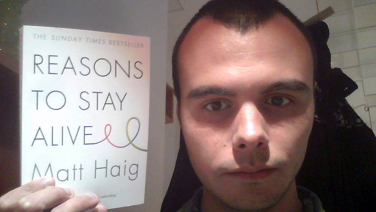

Depresia în căutarea sensului vieţii
by Adrian Harabulă on 08 February, 2016
Depresia e subiect sensibil, căci e foarte greu de descris. Nu m-am gândit vreodată că voi scrie despre depresie… Nu m-am gândit vreodată că sufăr de aşa ceva.
De cele mai multe ori eşti singur, gândindu-te despre viaţă şi ce sens are ea ore întregi. Şi dormind mult, mult prea mult, 9-12h.
Întrebând în jur de ce nu te sinucizi, sau care este motivul pentru care trăieşti acum, răspunsurile pot varia de la trăiesc pentru prieteni, familie sau pentru că vreau să devin ceva.
Cei din jurul tău te fac probabil să încă mai fii pe aici. Faptul că cineva depinde de tine sau te găseşte oarecum interesant e un motiv suficient ca să continui să fii.
În depresie te presează gândurile pe care le ai şi de care vrei să scapi…
- de ce să te ridici din pat… încă o zi naşpa de îndurat
- de ce să scrii o linie de cod, s-ar putea să nu iasă… oricum e timp pierdut
- de ce să mai scrii un articol, iar o să fie uitat, şters eventual necitit
- de ce să ieşi afară, ce să faci? ai mai tot ieşit, nu are rost, oricum nu va schimba cu nimic…
- iar să citeşti o carte!? Pentru ce? Cu ce crezi că te ajută?
E greu să fii în capul tău…
Sentimentul de goliciune, sentimentul că după atâta mers şi chin, tot nu există o soluţie…
Plus catalizatorul magic, nu eşti ca ei, probabil nu ai un job ca toată lumea… ca să te ţină ocupat cu lucruri triviale.
De-a lungul timpului, orice aş fi făcut, eventual tot gol m-aş fi simţit niciodată nu aş fi fost suficient de bun. Niciun ţel anume nu m-ar fi scăpat. Şi nu e ca şi cum îţi doreşti să fii fericit îţi doreşti doar să scapi de sentimentul că nu eşti suficient de bun.
Aşa că fără prea multe adaosuri, şi azi depresia e tot acolo ea, dar am învăţat să co-trăiesc cu ea. Ştiu că există şi lucruri mai importante, care chiar mă fac să trăiesc cu adevărat. Lucruri simple de altfel cum ar fi:
- o întâlnire cu un vechi prieten
- citit o carte
- scris un articol, cum e acesta
Ştiu şi că unii oameni sunt fericiţi şi cu lucruri foarte simple, dar pentru mine se pare că nu funcţionează asta. Să fi avut un job stabil 9-5 cred că aş fi înnebunit. Totodată aventurile de-a lungul timpului mi-au dat un sens să merg mai departe de fiecare dată, într-un mod ciudat.
Şi se pare că tocmai pentru că toată aventura asta nu se termină, asta mă face şi să continui…
Prietenii, conversaţiile simple, atenţia acordată altora poate sunt unul din cele mai mari lucruri care m-au ajutat vreodată să trec peste.
Poate tot odată depresia te ajută să îţi dai seama cât de singur eşti, şi înţelegi mai bine că şi cei din jurul tău sunt cel puţin la fel de singuri.
Poate asta îţi dă un sens dincolo de tine, să vezi că şi cel de lângă tine suferă şi el, diferit, dar la fel…
O carte interesantă pe acest subiect este Reasons to stay alive@Matt Haig. 